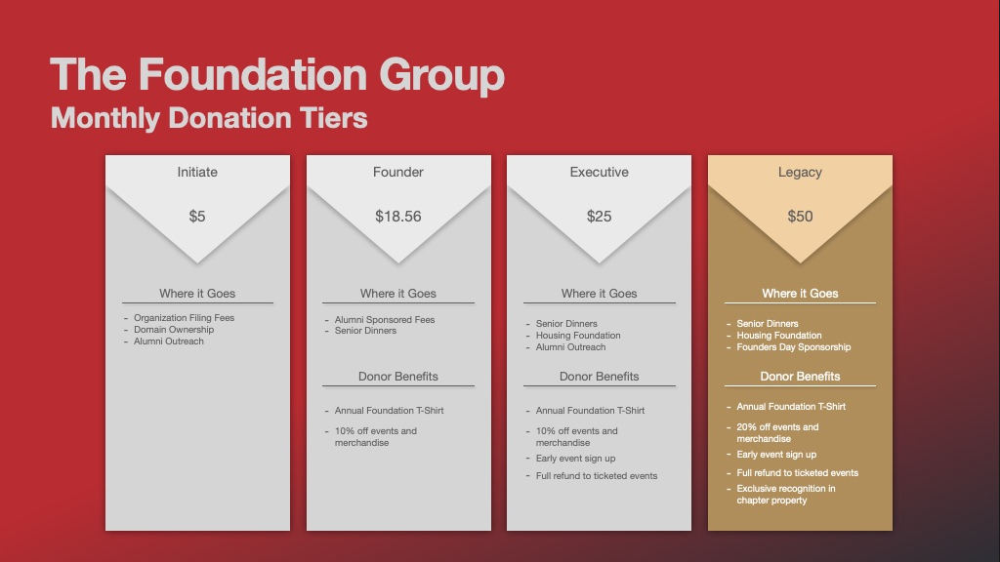

“We make a living by what we get, but we make a life by what we give.”
- Winston Churchill
Theta Chi lifelong.
Our oath does not end at graduation. Theta Chi welcomes a lifelong status as alumni. It is our strength is to welcome those who graduate into the alumni. A strong chapter is ever hardened by a strong alumni. Jointly, they can achieve many great feats. Theta Chi Nevada is the home to its alumni, and we want to make our home inviting. This can't be done on will alone. With the help of Theta Chi International Headquarters (a.k.a. IHQ), we have organized ourselves in a meaningful way to be most effective in supporting the undergraduate chapter.
What we ask of our Alumni
We ask that you reflect on your time as an undergraduate. We ask that you remember your oath and what those years meant to you. We know everyone has a reason for joining, and embracing the fraternity. We ask that you demand more of our undergraduates. We ask that you be involved in their success and growth.
...We ask that you give back
And Here is how:
| Ways to Give Back | Ways to Get Involved |
|---|---|
| Time |
|
| Talent |
|
| Treasure |
|
The Alumni Foundation Group
The Foundation Group is cornerstone of the alumni. It serves as the group of alumni who give back in dramatic and bold ways. Said another way: This group is how we will build a house for the undergraduate. Their contributes will be the base for which the house stands on. Their legacy in Beta Phi will be inscribed in the history of the chapter. This tier of alumni also receive benefits as a thank you for their continued support to the corporation. All of this is viewable in our donate drop down link at the top.
